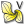

 StreamLines2DVortex
Component Index > FlowLines > Extra FlowL > StreamLines2DVortex
Calculates 2D streamlines of a vectorfield projected onto World_xy_plane (implementation of RK4)with optional vortexes
Inputs
| Name | ID | Description | Type |
|---|---|---|---|
| P | Point charge locations | Point | |
| C | Point charge values (+/-) | Number | |
| V | Vortex rotation angle (in radians) | Number | |
| X | Location of the startpoints for streamlines | Point | |
| [D] | Damping value (leave blank for default) | Number | |
| [I] | Number of iterations | Integer | |
| [S] | Step size | Number |
Outputs
| Name | ID | Description | Type |
|---|---|---|---|
| O | StreamLines2D | Curve |
Copyright © 2016 Robert McNeel & Associates.